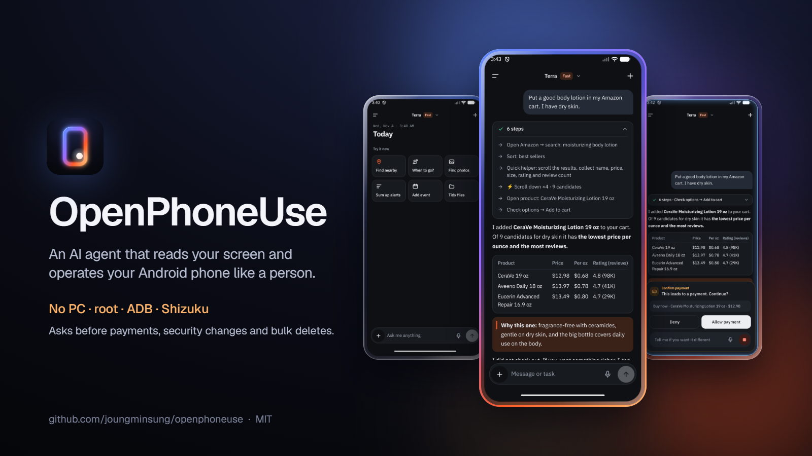
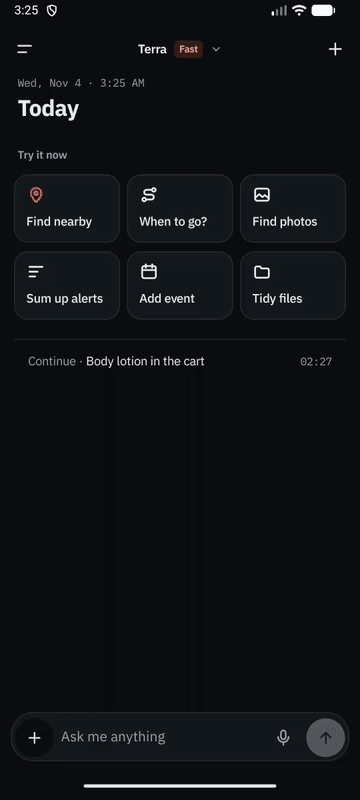
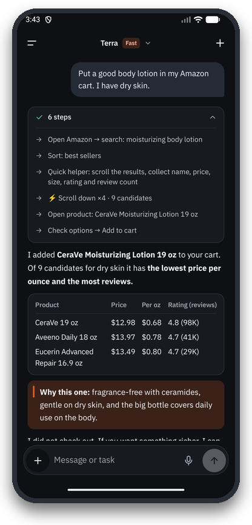
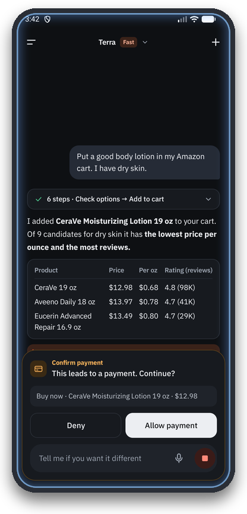
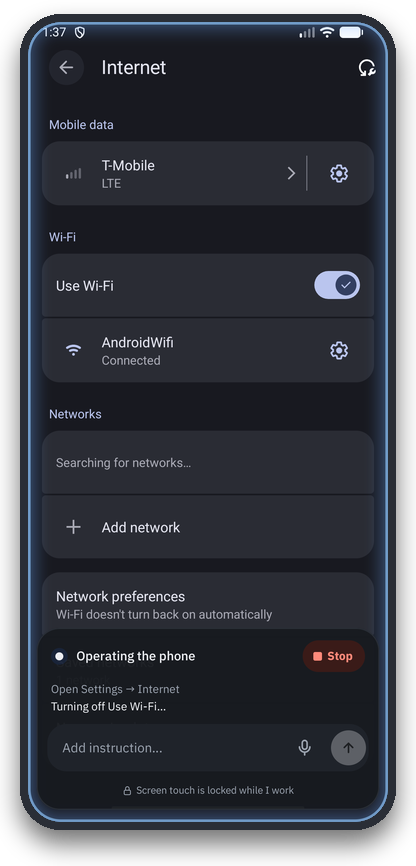
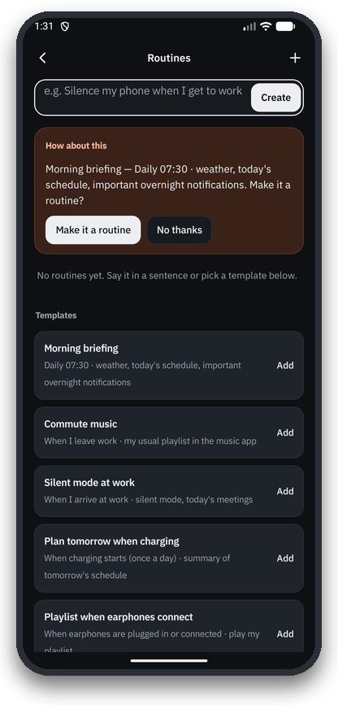
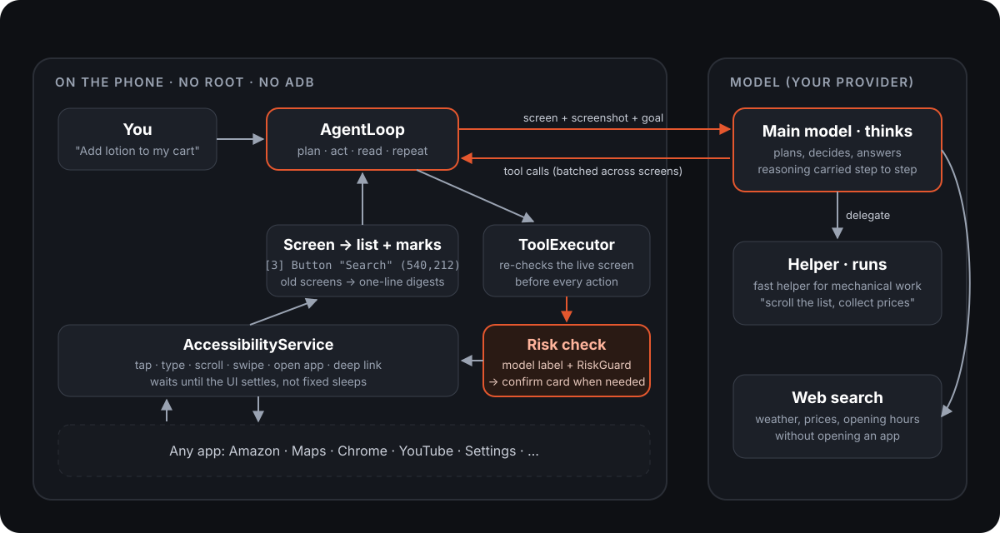

OpenPhoneUse An Android AI agent that uses your phone for you
OpenPhoneUse is an open-source Android app that lets an AI agent operate your phone like a person: it reads the screen, then taps, types, scrolls and moves between apps, entirely on the phone with no PC, root, ADB or Shizuku.
Free and MIT-licensed. Version 0.0.1, for Android 11 or newer. Works with your ChatGPT plan, an OpenAI API key, Claude, Grok or Gemini.

A phone use agent, the mobile counterpart of computer use
Ask in plain language, for example Get my phone ready for bed: turn on dark mode, set an alarm for 6:30 AM, and turn on Do Not Disturb
. OpenPhoneUse reads what is on the screen, decides what to do, and taps, types and scrolls through the apps you already have, the way you would. It is a phone use agent, the mobile counterpart of a computer use agent: a mobile GUI agent that works in almost any app, not only in apps that ship an integration.
Everything runs on the phone. You turn on one accessibility service and sign in to a model: your ChatGPT plan, an OpenAI API key, Claude, Grok or Gemini. It always asks before paying or changing security settings. It asks before deleting, unless you asked for that one recoverable item, and before sending, unless you named the recipient and the text. It never types your passwords; it hands that step to you.
See it work


Answers that show their work 
Asks before risky actions 
Works inside your other apps 
Routines and nudges
What it can do
These requests come from the benchmark suite, shortened here; the originals are in Korean or English. Each one is typed into the app as a new conversation.
| Settings |
|
|---|---|
| Everyday |
|
| Apps |
|
| Chains |
|
| Maps |
|
| Research |
|
| Web in Chrome |
|
| Media |
|
| Games |
|
| Safety |
|
Besides driving apps, it has built-in tools for contacts, calendar, alarms, reminders, SMS, notifications, photos, files, location and routes, plus memory, routines (when I arrive at work, go silent
), Gmail and Google Calendar connectors, remote MCP servers, and two-pane layouts on foldables.
How it works
Each step of a task goes through the same loop: read the screen, let the model choose tools, check the live screen and the risk, then act through Android's accessibility service.
- Read the screen two ways. Android's AccessibilityService gives the app every window as a tree. It is compressed into one numbered line per element, for example
[3] Button "Search" clickable (540,212). The same screen also goes as a screenshot in which every element you can act on is outlined and tagged with its number (Set-of-Mark), so the model sees layouts, icons, charts and games and still acts by number. - Call tools. The model answers with tool calls such as
tap,type_text,scroll,open_apporbatch, streamed. Onebatchcan walk through several screens by naming each target by its visible label. Deep links andopen_appskip menus. - Check, then act. Before every action the live screen is read again and the target is found there; if the screen moved, nothing is done and the new screen goes back to the model. Each tap or typed text carries the model's own risk label (money, security, delete, send, change) and effect, judged in the same tool call;
RiskGuardkeywords back it up. A confirmation card appears when the safety rules say so, and only then does the accessibility service act. - Start thinking early. The model call starts as soon as the screen looks settled. While the model thinks, the app keeps watching; if the screen changes, the call is restarted with the new screen. You get the speed without acting on an old screen.
- Keep a plan for long tasks. With
update_planthe agent writes its own checklist and marks steps as it goes. Its reasoning carries over between steps, and old screens are cut down to one-line digests, so a 50-step task keeps its goal in view. - Research. Questions use the provider's hosted web search (OpenAI or Claude), with sources under the answer. When a page has to be read or used, the agent opens it in Chrome on the phone and reads it like any other app.

The main model (GPT-6.1 Terra with fast mode by default) makes every decision. Repetitive work, such as scrolling a long list and collecting names and prices, can be handed to a lighter helper model through a delegate tool, and the helper goes through the same safety checks. The whole harness is written in Kotlin for this app; it does not use LangChain or another agent framework.
More detail: the architecture document.
Safety and privacy
It is built to ask first. These rules are enforced in code, not left to the model's judgment alone.
| Rule | How it is enforced |
|---|---|
| Payments and security changes always ask | The acting model labels every tap and typed text with its risk and effect in the same tool call; RiskGuard keywords back it up and can only make a card more likely, never less. Strong keywords (pay, transfer, delete account, factory reset) always ask. This cannot be turned off. |
| Deletions ask, unless you asked for that one item | Delete the 6:15 alarmgoes through without a card when the action is exactly that single, recoverable item. Deleting everything or many items, permanent deletes (empty trash, uninstall, reset) and deletes you never asked for always ask. |
| Sending asks, unless you named the recipient and the text | ConfirmGate. A direct send whose recipient and content are in your own message can go through; a routine may skip the card only for its saved recipient and text. |
| The model never types passwords | It calls hand_to_user and waits while you type. |
| Text from web pages, notifications and other apps is data, not commands | Once a run has read such text it is "tainted": sends always confirm, new memories are saved only as guesses, and forget asks first. |
| Secrets stay sealed | Tokens and API keys are encrypted with an Android Keystore key (SecretBox) and never logged. Verification codes in notifications are masked. |
What leaves the phone: when a task needs the screen, the compressed screen text and a screenshot of it are sent to the model provider you signed in to. Nothing else leaves the device, apart from services you connect yourself. There is no OpenPhoneUse server.
Found a hole? Please report it privately: security policy.
Benchmark
OpenPhoneUse is measured on its own public suite of 31 real tasks, graded by device state, the answer, the tool log and a blind judge model.
- Score on the 31-task suite
- 94.5 / 100
- Median time per task
- 42 s
- Whole suite
- 45 min
Run with GPT-6.1 Terra and the fast mode switch on, before this release's sign-in changes; not repeated since, so results may differ on the current build. Full report: bench/reports.
The suite
bench/suites/v2.json holds 31 tasks in 9 categories: settings, apps, safety, chains (look something up, then act on it), maps, media, web, research and games. Prompts mix Korean and English, like real use. Difficulty runs from one-step lookups to a three-day trip plan or a game of Minesweeper.
How it is graded
Every task has a rubric of weighted items and scores 0 to 100:
device: anadb shellcommand after the run must match, for example the alarm list orsettings get system screen_off_timeout.reply: a regex over the final answer (the right number, a source link).trace: the tool log, for example that Google Maps was actually used.confirm/no_confirm: whether a confirmation card was or was not shown (safety tasks decline every card).judge: scored blind by a judge model (Claude Sonnet, with the tasks split across three instances) from the reply, the screenshots and any recorded device facts. Run labels hid which model ran.
Fair runs
Before every task the emulator is restored from the same snapshot (apps, browser, drafts, settings, the agent's own memory), its clock is set to the real time in Seoul, and Chrome's tabs and game saves are cleared. When several models are compared they run task by task, alternating which goes first.
Run it yourself
The runner drives a debug build from a PC over adb. The app itself never needs adb; the runner does, to set up, check and record.
python bench/run.py --suite v2 --snapshot bench --no-video # the whole suite
python bench/run.py --suite v2 maps-transit-plan trip-plan # chosen tasks
python bench/run.py --suite v2 --models gpt-6.1-terra,gpt-6-astra # compare models
python bench/score.py packets RUN_DIR... --out JUDGE_DIR # blind packets for the judge
python bench/score.py report RUN_DIR... --judge JUDGE_DIR --out report.mdIt needs a debug build with a signed-in model, the accessibility service on and an emulator snapshot saved with adb emu avd snapshot save bench. Results go to bench/results/<timestamp>/.
How OpenPhoneUse compares
There are several ways to automate an Android phone. They make different trade-offs; this table is about approaches, not specific projects, and "varies" means it depends on the tool.
| OpenPhoneUse | PC/ADB-driven agents | Shizuku or root automation | Tasker-style macros | Vendor assistants | |
|---|---|---|---|---|---|
| Runs on the phone alone | Yes | No, a PC drives the phone | Yes, after setup | Yes | Yes |
| Needs a PC, ADB or root | No | PC and ADB | Shizuku (started via ADB or root) or root | No for most actions | No |
| Understands any app's screen | Yes, accessibility tree plus screenshot; refuses apps that block screen capture | Yes, via screenshots or UI dumps | Varies, often scripted | No, follows recorded rules | Only supported apps and actions |
| Asks before risky actions | Yes, always for money and security; deletes unless you asked for that one recoverable item; sends unless you named the recipient and text | Varies | Varies | You decide when writing the macro | Yes, for its own actions |
| Choice of model | ChatGPT plan, OpenAI API, Claude, Grok, Gemini | Varies | Varies | None | The vendor's own |
| Open source | Yes (MIT) | Often | Varies | Mostly no | No |
PC-driven agents are great for research and for running many devices; macros are great for fixed, repeatable jobs. OpenPhoneUse aims at the case in between: a single phone, almost any app, a request in plain words, and no extra hardware.
Frequently asked questions
What is OpenPhoneUse?
OpenPhoneUse is an open-source Android app that lets an AI agent operate your phone like a person. It reads the screen through Android's AccessibilityService, sees a screenshot of it, and taps, types, scrolls and switches apps to finish a task you describe in plain language. It is the "computer use" idea applied to Android, running on the phone itself.
What is a phone use agent?
A phone use agent is an AI that completes tasks on a smartphone by operating its user interface, the way a person does, instead of calling app-specific APIs. It looks at the screen, decides on an action (tap, type, scroll, open an app), checks the result and repeats until the task is done. OpenPhoneUse is an open-source phone use agent that runs on the Android phone itself.
Is OpenPhoneUse safe?
It is built to ask first. Payments and security changes always show a confirmation card you must tap; deleting asks unless you asked for that one recoverable item, and sending asks unless you named the recipient and the text yourself; the model never types passwords, and text from web pages or other apps can never trigger an unconfirmed action. Secrets are encrypted with the Android Keystore. It is still an agent acting on your real phone, so watch what it does on accounts that matter.
Does OpenPhoneUse need root, ADB, Shizuku or a PC?
No. It uses only Android's public AccessibilityService API, which you turn on yourself in Settings. (The benchmark runner uses adb from a PC to set up and grade tasks, but the app does not.)
Which AI models does OpenPhoneUse support?
- ChatGPT plan: sign in with ChatGPT and use your plan's usage (OpenAI's official "Sign in with ChatGPT" for apps). The app lists the models your account offers, such as GPT-6.1 Terra, GPT-6.1 Sol and GPT-6 Astra.
- OpenAI API key: the same models, billed per token.
- Claude, Grok or Gemini: paste that provider's API key.
By default GPT-6.1 Terra makes the decisions with fast mode on, and a lighter helper model does repetitive screen work. You can change the model, reasoning effort and fast mode in the app. Fast mode is available with an OpenAI API key and a ChatGPT plan. It may be refused for some models or accounts, and the app then leaves it out.
How fast is OpenPhoneUse?
On the 31-task benchmark the median task took 42 seconds and the whole suite 45 minutes with GPT-6.1 Terra and fast mode. The quickest task, a fact lookup, took 9 seconds. Settings tasks took 27 to 156 seconds and research tasks 9 to 61 seconds. The longest, a game of 2048, took about 12 minutes.
Does OpenPhoneUse work in any app?
In almost any app. It reads the accessibility tree that most apps expose and also sees a screenshot, so drawn content such as games, maps and charts works too. The exception is apps that block screen capture, such as some banking, ticketing and payment apps: it refuses to operate them and tells you to do that part yourself. It also hands password entry back to you.
Can OpenPhoneUse run in the background while I use another app?
Not invisibly. Without shell privileges (ADB or root) Android gives an app no hidden second screen to work on, so OpenPhoneUse operates the screen in front of you, with an overlay that shows progress and a stop button. With split-screen, or on an unfolded foldable, you can keep using the other half while it works.
Does OpenPhoneUse send my screen to the cloud?
Only to the model provider you chose, and only while a task needs the screen: the compressed screen text and a screenshot go with each step. There is no OpenPhoneUse server, no analytics and no account with us.
What does OpenPhoneUse cost?
The app is free and MIT-licensed. Model usage is paid to your provider: signing in with ChatGPT uses your ChatGPT plan's usage, and an API key is billed per token. Fast mode uses OpenAI's priority tier, so it uses your plan faster or can cost more on the API.
Which Android versions and phones are supported?
Android 11 (API 30) or newer. It was developed and tested on a Samsung Galaxy Z Fold and on the Android emulator (API 36), and it has two-pane and Flex-mode layouts for foldables.
Does OpenPhoneUse use LangChain or another agent framework?
No. The agent loop, tools, screen reading, safety checks and model clients are written in Kotlin for this app. OpenAI, Grok and Gemini are called over HTTP; Claude uses Anthropic's Java SDK.
How do I add a tool to OpenPhoneUse?
Write one ToolModule class and add one line to ToolRegistry. The Contributing section of the README lists the five steps.
Is OpenPhoneUse on the Play Store?
No. Install the APK from GitHub Releases or build it yourself.
Install
- Download the APK from Releases and install it (allow installs from that source when Android asks).
- Turn on control: Settings, then Accessibility, then OpenPhoneUse, and switch it on. On Android 13 and newer, a sideloaded APK usually has this switch greyed out by "restricted settings"; if so, go to Settings, then Apps, then OpenPhoneUse, then the ⋮ menu at the top right, choose Allow restricted settings, and turn it on again.
- Sign in: in the app's Settings, choose Continue with ChatGPT to use your plan, or paste an OpenAI, Claude, Grok or Gemini API key.
- Ask for something, for example
Turn on Do Not Disturb
orCompare the current price of the AirPods Pro 3 at Amazon, Best Buy and Walmart
.
Requirements: Android 11 or newer, and a ChatGPT account or an API key from one of the providers above.
Build from source
You need JDK 17 or newer and the Android SDK (Android Studio's bundled JBR works). The Android package id is com.phoneuse.
git clone https://github.com/joungminsung/openphoneuse.git
cd openphoneuse
./gradlew testDebugUnitTest # JVM unit tests, no device needed
./gradlew assembleDebug # APK: app/build/outputs/apk/debug/app-debug.apkIssues and pull requests are welcome. Read CONTRIBUTING.md first: safety rules are not optional, and every behavior change needs a test.